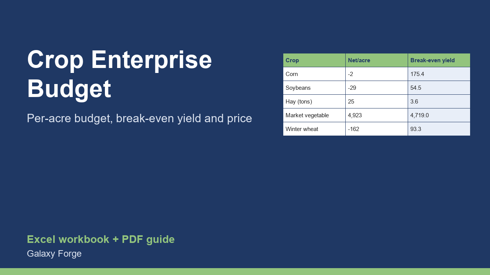

Budget every crop per acre, allocate the farm's fixed costs, and see the break-even yield and break-even price for each crop and for the whole farm before you plant.
An enterprise budget is the basic tool of farm planning: for each crop it lists the expected revenue and every cost per acre so you can see which crops pay, what each needs to break even, and how the farm as a whole will do before any seed goes in the ground.
This workbook handles up to 15 crops. For each you enter acres, expected yield, price, and the per-acre costs of seed, fertilizer, chemicals, labour, fuel and repairs, and other variable inputs. Whole-farm fixed costs (land payments, insurance, machinery ownership, overhead) are allocated to the crops by acre. The sheet returns revenue, variable costs, contribution margin, net return, the break-even yield and the break-even price, and the margin of safety.
The Summary gives the farm total, the most and least profitable crop per acre, and the break-even yield cushion across the farm.
1) On Farm, enter the whole-farm fixed costs for the year and how to allocate them (by acre). 2) On Crops, replace the five example crops with your own acres, yield, price and per-acre costs. 3) Read the Net return and Break-even columns; change the yield or price to test a bad year. 4) Read the Summary and save one copy per season.
Price: $29, one-time. Download: small_farm_crop_enterprise_budget.xlsx (Farm, Crops, Summary) and this guide. Works in Excel 2016 or later, Excel for Mac and Excel on the web; opens in Google Sheets and LibreOffice.
New product, listed 2026-11-05: no sales or reviews yet. Example figures in the workbook are illustrative.
This workbook is a planning tool, not agricultural, tax, insurance or financial advice. Yields and prices are uncertain and depend on weather, markets and management. Check inputs against your records, your extension service and your lender.